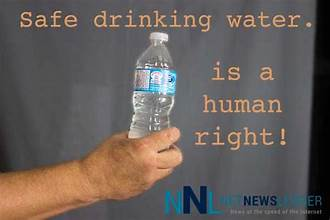

Safe water, reliable sanitation services

Climate change affects water access for people worldwide through more devastating weather events and the
associated floods, droughts, storms, and landslides. Water For People
is building resilience, planning water resources management, and working
with governments on climate financing so that communities and people survive climate change.
.
Our mission is to end the world’s water crisis
Globally, women and girls are responsible for water collection in 8 out of 10 households
without water on site. This impacts every aspect of a young girl's life – education,
health, economic opportunity, and safe childbirth. From training women in business
and civic leadership to establishing menstrual hygiene centers in schools, Water
For People is promoting equity and opportunity.